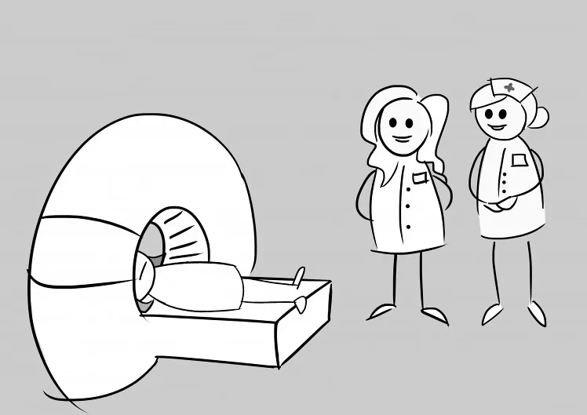
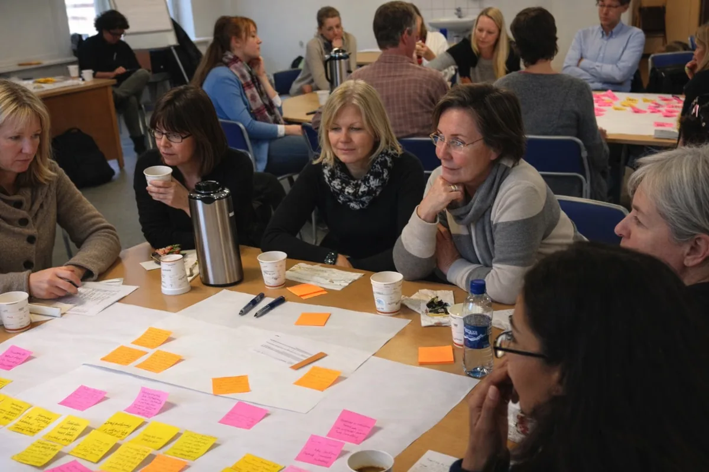

Twelve weeks of not knowing, cut to six days
A woman who found a lump could wait up to twelve weeks to learn whether she had breast cancer. We redesigned the diagnostic pathway with the clinicians who run it. It is now the national standard in Norway.
- The problem
- A woman who found a lump could wait up to twelve weeks to learn whether she had breast cancer.
- What I saw
- For her, she became a patient the moment she found it. For the hospital, she became one only once cancer was confirmed. The time before diagnosis belonged to nobody.
- What I did
- Interviews and observation with patients and clinicians, journey maps and service blueprints, then co-design workshops where clinicians rethought their own routines. I stayed for implementation.
- The outcome
- Time to diagnosis fell from up to twelve weeks to six days. Norway adopted the process as the national standard, and the OECD cited it.

Nobody owned the waiting.
For a woman, she becomes a patient the moment she finds a lump. For the hospital, she only became a patient once cancer was confirmed. Everything followed from that gap. Appointments and tests were scheduled department by department, each one sensible on its own, and the weeks disappeared in between because the time before diagnosis belonged to nobody.
She was already a patient. The system just had not noticed yet.
Understood the reality
Interviews and observation with patients, clinicians and the staff who book the appointments. Not what the pathway says on paper, but what actually happens to a person moving through it.
Made the gap visible
Journey maps and service blueprints that put the patient experience and the hospital process on the same page, so decision makers could see exactly where the time and the information were lost.
Redesigned it with the people who run it
In co-design workshops, clinicians and leaders rethought routines they had followed for decades. We did not arrive with answers. We built the evidence and the confidence for them to change the system themselves, which is the only version that survives contact with a real hospital.
Stayed for implementation
Supporting the new process until it worked in daily practice rather than only on the blueprint.


Departments coordinated around the patient instead of handing her over.
- Appointments and diagnostic tests were sequenced so they happened close together rather than weeks apart.
- Someone owned the whole pathway, including the part before a diagnosis existed.
- Patients were told clearly and promptly what would happen next, which is most of what the fear is made of.
Time to diagnosis fell from up to twelve weeks to six days, and the process became the national standard for breast cancer in Norway. It won the Norwegian Award for Design Excellence and IxDA recognition, was cited by the OECD and published as a case study in This Is Service Design Doing.
This project is the reason I believe the biggest improvements come from redesigning the system around the person, not from better screens. It is still how I work.